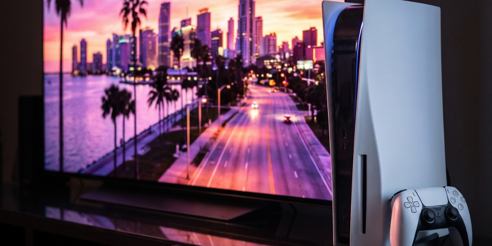

Geekotidien · Édition du 20 novembre 2026
GTA 6 : 99 sur Metacritic
Record égalé avec Ocarina of Time

Le jour de sa sortie, GTA 6 obtient 99 de moyenne sur Metacritic, selon Notebookcheck. Le score dépasse GTA 5, GTA 4, GTA 3 et Red Dead Redemption 2 (97), et égale Zelda: Ocarina of Time, sorti sur N64 en 1998, comme titre le mieux noté de l'agrégateur.
Plus de 140 médias ont reçu un code de test ces dernières semaines. Les notes des joueurs ne sont ouvertes que 36 heures après la sortie. L'histoire de Jason et Lucia représente environ 60 heures de jeu sans les activités annexes.
Digital Foundry mesure des baisses sporadiques sous 30 images par seconde sur PS5 standard, selon l'article. Le score repose sur l'agrégation de critiques publiées, sans communiqué de Rockstar ou Take-Two.
Le + : Digital Foundry note des baisses sous 30 fps sur PS5.